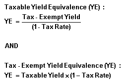

The interest rate on a taxable security that would render a return equivalent to that of a tax-exempt security, and vice versa, calculated as follows:
In order to calculate yield equivalence, divide the tax-exempt yield by 1 minus the investor's tax rate. For example, say you were considering a 6% tax-exempt municipal bond, but you would like to calculate what the interest rate on a taxable investment would have to be to give you the same return. If you have a 20% rate of taxation, you would need a return of 7.5% on your taxable investment to match the 6% return on the tax-exempt investment (6%/(1-0.20)=7.5%).
Conversely, if you know your taxable rate of return, you can calculate the equivalent rate on a tax-exempt investment. This is done by multiplying the taxable rate by 1 minus your tax rate. If your taxable return is 6% and your rate of taxation is 20%, you need a 4.8% return on a tax-exempt security to match the after-tax return on a taxable security (6%*(1-0.20)=4.8%).
{kind=link}